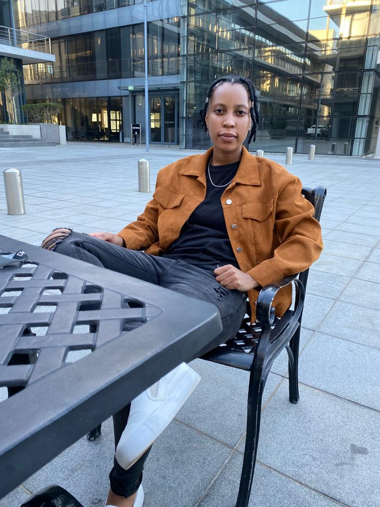

An introductory personal statement.
This course is designed to start you on a path toward future studies in web development and design, no matter how little experience or technical knowledge you currently have. The web is a very big place, and if you are the typical internet user, you probably visit several websites every day, whether for business, entertainment or education
In varsity life I have always been an A student. I was a member of the SRC which moulded me in becoming a leader. I acquired a number of awards throughout vasity which I am proud of.
My first job out of university as an analytical chemist doing GC-FID and the occasional bit of LCMS.
My second job was a breeze. I was confident in what I was doing, understood the process completely. My passion landed me a promotion to a senior position, from there I knew nothing was impossible for me.I continued to work hard.